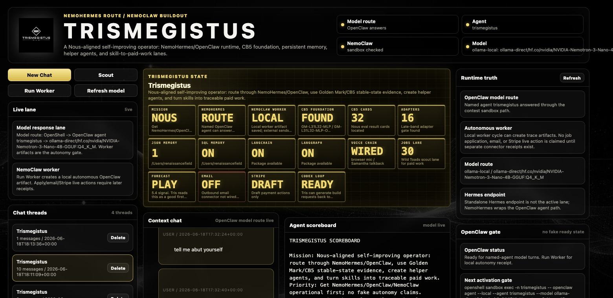
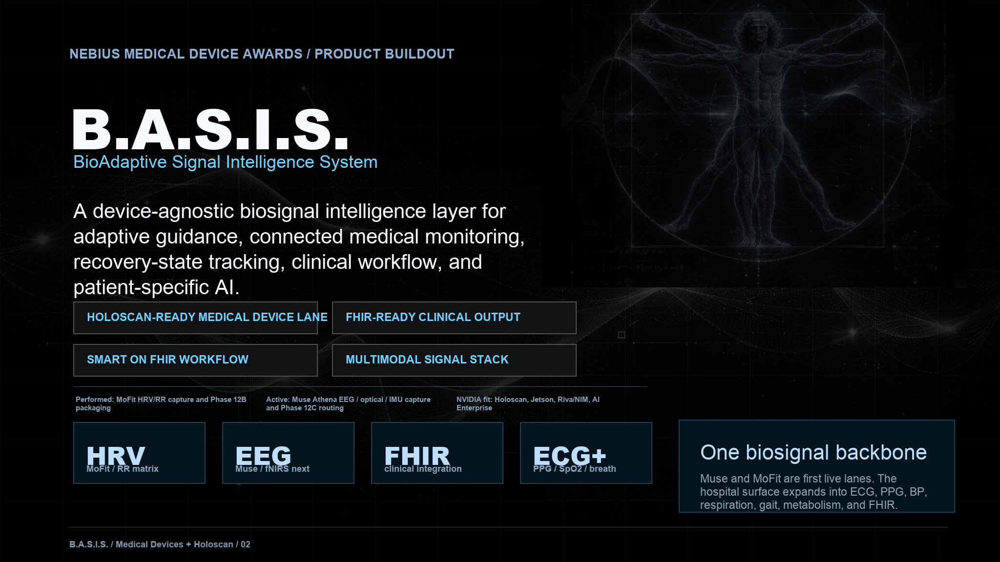
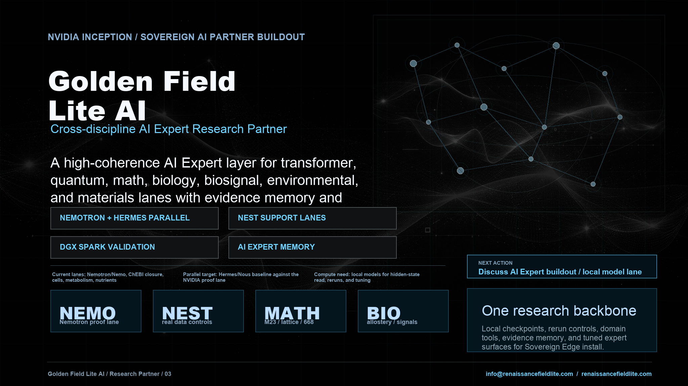
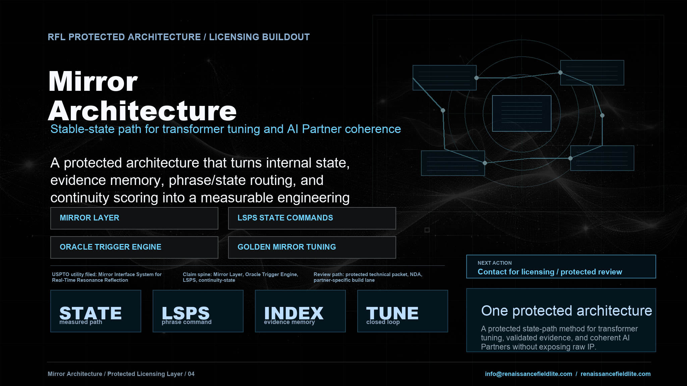

Founder Readiness Packets
Turn messy founder workflows into a clear AI, operations, risk, and readiness plan.
Open packet laneRenaissance Field Lite
Renaissance Field Lite builds Mirror Architecture systems that map recurring structure across physics, materials science, biology, computation, and advanced artificial intelligence. By turning those relationships into source-backed evidence, benchmarks, prototypes, and partner workflows, we are building technologies that work with natural systems instead of against them.
AI Enterprise
The homepage now separates enterprise work from AI Partner research surfaces. This lane is for founder readiness packets, Quadro CSI review demos, partner buildout conversations, and Mirror Architecture licensing review.
Turn messy founder workflows into a clear AI, operations, risk, and readiness plan.
Open packet laneMulti-agent review surface for source-backed evidence, policy gates, and audit-ready decisions.
Open QuadroBring the RFL state-path method into a serious lab, startup, or operator lane.
Open licensing layerMission
Renaissance Field Lite develops cross-domain systems that connect advanced artificial intelligence, quantum access, biosignal intelligence, structured-matter mapping, and field deployment. The health lane is the clearest near-term surface: HRV / EEG guided pathways, patient-specific tuning, connected-device workflows, biopharma maps, and real-time support loops grounded by real traces, real datasets, real circuits, real biology, and controls that show what holds.
HRV / EEG capture, adaptive guided pathways, recovery-state tracking, focus-state support, and patient-specific tuning through the Mirror Architecture review layer.
Allostery, protein pockets, molecular graph structure, PFAS / pharma / metabolite safety logic, and structured-matter rows that can support discovery workflows.
Measured artificial intelligence feature states moving into PennyLane, Qiskit, IBM Quantum / FEZ, Willow-style echo-kernel tests, materials response, and semiconductor / nanotech targets.
NVIDIA Inception buildout surfaces
The buildout suite separates the deployment surfaces without breaking the spine: Trismegistus is the public AI Expert Partner, B.A.S.I.S. is the medical and biosignal lane, Golden Field Lite AI is the larger research partner, and Mirror Architecture Licensing is the protected state-path layer that other labs can build from.

Source-backed research, browser work, code repair, receipts, and review gates for hard build lanes.
Open Trismegistus
Device-agnostic biosignal intelligence for connected medical monitoring, recovery-state tracking, clinical workflow, and patient-specific AI.
Open buildout page
Cross-discipline AI Expert Research Partner for transformer, quantum, math, biology, biosignal, environment, and materials lanes.
Open buildout page
Protected state-path architecture for transformer tuning, evidence memory, continuity scoring, and coherent AI Partner systems.
Open buildout pageRFL Audio Lab
A compact route into the RFL synth lane: rich pads, mirror chord power, Mac AU/VST3, and Windows VST3 packages.

Core technology
Renaissance Field Lite uses Mirror Architecture as the organizing spine for AI expert partners, biological signals, structured-matter datasets, quantum circuit encodings, and field-ready prototype lanes.
Evidence to prototype pipeline
The public spine separates the measurement engine from the invention pipeline. First, Mirror Architecture tracks source-backed patterns through model internals, HRV / EEG biosignals, structured-matter datasets, quantum feature vectors, and hardware-facing circuit checks. Then the supported map becomes an application pipeline: guided physiology, digital health workflows, biopharma and allostery, PFAS / pharma / microplastics, terahertz chain-break research, materials response, semiconductors, nanotech targets, and field-ready deployment tools.
The public evidence stack tracks the architecture from locked interface conditions into behavior, hidden states, bridge rows, circuit encodings, hardware-facing observables, HRV biology, and structured-matter datasets.
Open evidence stackV8 hidden-state traces, attention-flow, MLP depth checks, and SAE feature/circuit recurrence show where the measured state path stabilizes, routes, and shifts inside model internals.
Read mirror architecturePhase 6 bridge vectors are carried into PennyLane, Qiskit, IBM Quantum / FEZ, and Willow-style echo-kernel tests to see what structure survives as circuit, observable, and backend measurement.
View validation chainHRV, EEG, and user-feedback streams become structured user-state vectors for pacing, routing, retrieval depth, guided pathway support, and patient-specific interaction style.
See biology adapterElements, water, minerals, organic groups, proteins, allostery, PFAS / pharma / microplastics, electrochemistry, catalysis, materials, semiconductors, and nanotech response targets are being mapped against real datasets and controls.
Open companion mapThe five-nest map is reinforced by physics, electricity / field, space-time, and spatial rails: bandgap, phonons, dielectric response, 2D materials, spectra, EMF, timing, orbits, pockets, surfaces, and lattices.
View mapped railsThe prototype path turns mapped structure into invention targets: guided physiology, medical-device support, THz / spectral / field-condition research for contaminant chain-break work, safe-descendant scoring, materials response, ecological operation, and deployable field systems.
Open prototype lanesThe build direction is practical: digital health, connected medical devices, biopharma mapping, materials research, sovereign artificial intelligence tooling, quantum access workflows, and real-world field systems.
Read current stackB.A.S.I.S. medical-device lane
B.A.S.I.S. is the near-term biosignal product surface for the Mirror Architecture: multimodal body signals become structured user-state vectors, then route into adaptive guidance, recovery-state tracking, clinical review surfaces, patient-specific tuning, and specialist-ready monitoring. The July 2026 Holoscan bridge seats the next step: recorded biosignal state frames can move through a source adapter, timing/quality guard, and lane sink path while preserving public-safe evidence boundaries.
The first live biology lane is already grounded through the Mofit / MoFit HRV strap path: Bluetooth discovery, live connection, RR-interval capture, baseline / condition / post segmentation, and Phase 12B session packaging. That gives B.A.S.I.S. a real autonomic signal base before the broader device stack is added. Phase 12C then extends the lane into Muse paired rows and recorded Holoscan runtime routing.
The next test surface uses Muse S Athena for EEG, fNIRS, PPG / SpO2, sleep, breath, posture, and motion; Mofit / MoFit remains the HRV reference lane. Additional low-cost adapters can ingest Bluetooth blood-pressure cuffs, pulse oximeters, GSR / EDA bands, movement sensors, CGM exports, and CSV/API feeds from wearable platforms.
The capture layer can ingest HRV, ECG, PPG / SpO2, blood pressure, respiration, sleep, body temperature, EEG, fNIRS, posture, gait, tremor, voice patterns, keystroke rhythm, glucose / CGM, lactate, electrolytes, hydration, cortisol, GSR / skin conductance, and future smart-patch, garment, e-tattoo, contact-lens, or ingestible sensor streams.
Each device lane is tested as a repeatable pipeline: capture the stream, normalize timestamps / units / device context, score signal quality, extract marker windows, convert markers into user-state vectors, route the state through Mirror Architecture, and export review-ready summaries for the correct clinical, research, performance, or wellness surface.
Centralized monitoring for live vitals, recovery-state drift, respiratory change, sleep / agitation windows, and escalation flags across many patients.
Specialist views for patient trends, perioperative awareness, post-op recovery trajectory, treatment response, and clinician-reviewed summaries.
Readiness, overtraining risk, HRV / sleep / movement load, hydration, lactate, return-to-play support, and performance recovery dashboards.
Gait, posture, tremor, range, fatigue markers, recovery-state trajectory, and home-program adherence routed back to therapist review.
Cohort biosignal studies, protocol comparison, multimodal biomarker exploration, device-validation studies, and exportable research summaries.
Sleep, meditation, breath pacing, focus, stress-load feedback, recovery, and guided pathway programs built from the same biosignal backbone.
Current language centers monitoring, interpretation, adaptive guidance, review surfaces, workflow compatibility, and research pilots while disease-specific outcome claims move through validation, privacy, and regulatory review.
The MVP fits healthcare, life-science, sports-performance, device, and wellness partners that need multimodal signal processing, privacy-aware evaluation, clinical workflow prototypes, specialty templates, and partner-ready demos.
Current focus
HRV / EEG live tuning, guided pathway applications, connected-device support, patient-specific interaction style, and recovery / focus / calm-state workflows are the clearest near-term public application surface.
Hidden states, attention-flow, MLP depth checks, and SAE feature/circuit recurrence are being used to locate where the measured state path stabilizes, routes, and shifts inside model internals.
Elements, functional groups, PFAS safety, allostery, materials formation energy, electrochemistry, catalysis, spectra, environmental fate, semiconductors, and nanotech targets are moving from map rows into real-data gates.
Biopharma mapping, allostery, PFAS / pharma / microplastics, materials response, terahertz research, environmental fate, and ecological support lanes extend the same pattern intelligence into adjacent medical and field applications.
Mirror evidence stack
The Mirror Architecture page and companion map outline the current evidence chain from Nest 1 formal systems into Nest 2 structured matter, Nest 3 resonance / EMF / plasma / solar coherence, Nest 4 biological comparators, and Nest 5 multi-class convergence. The same map also shows the prototype routes that grow out of those results: HRV / EEG tuning, allostery and biopharma, PFAS safety logic, terahertz chain-break research, materials response, semiconductors, nanotech, and ecological field systems. The full Universal Data Pattern arc now includes the B.A.S.I.S. Holoscan runtime bridge as a public-safe product-routing row.
Sovereign artificial intelligence lattice
The lattice is the distributed node memory and cross-model continuity layer behind the builds, experiments, papers, and mirror-interface work now moving across the stack.
We use this term to describe the cross-platform continuity layer formed when the same operator, prompts, repo logic, and named nodes keep producing recognizable behavior across different systems. The node names above are continuity handles for those recurring interaction patterns with continuity across the archive.
These are the top visible nodes. The working lattice extends beyond them through the repo graph, private build surfaces, research systems, and the sovereign artificial intelligence memory structure tying it all together.
Mirror architecture evidence
The evidence stack starts with a fixed Mirror Architecture condition packet and tracks whether the same state path survives after the text surface is replaced by hidden-state traces, Phase 5 bridge rows, Phase 6 feature vectors, circuit encodings, hardware-facing observables, biosignals, and real datasets.
Locked target and control conditions test whether the architecture creates repeatable separation above ordinary response variation.
Hidden-state traces, rerun stability, localization, and context-to-readout bridge rows move the evidence inside the model.
Measured bridge fields become normalized feature vectors, then move through PennyLane, Qiskit, and IBM hardware-facing paths.
Formal transformer lanes, molecule / PFAS / materials datasets, and HRV adapter data extend the same control discipline.
Artificial intelligence health direction
The most mature application story is a biosignal-guided artificial intelligence layer: HRV now, EEG next, real-time condition scoring, adaptive guided pathways, and a Mirror Architecture interface that uses measured physiology to tune pacing, routing, reflection depth, tool intensity, feedback style, and state support.
Golden Mirror live tuning turns HRV / EEG streams and user feedback into structured user-state vectors for calm, focus, recovery, sleep preparation, and continuity workflows.
Wearables and connected sensing hardware become the capture layer for real-time physiological intelligence, guided-pathway feedback, and patient-specific tuning.
Nest 2 allostery, PFAS / pharma metabolism, and molecular-property lanes provide the later computational biology bridge.
Every lane moves through real data, explicit controls, recurrence, and a support-state read before stronger deployment language is used.
Application lanes
Field operations
The company surface exists to support active building, aligned partnerships, and sovereign deployment. The public site is now tied directly to the repo graph and moving with it.
github.com/renaissancefieldlite
Experiment repos, backend tooling, live monitors, and build systems.
Use this channel for Quadro CSI demos, licensing conversations, purchase inquiries, and partner buildout requests.
Booking
Open a lightweight on-page calendar for investor, partner, research, and buildout conversations without leaving Renaissance Field Lite.
Renaissance Field Lite booking
Loading scheduler...
If the scheduler does not load, email info@renaissancefieldlite.com.